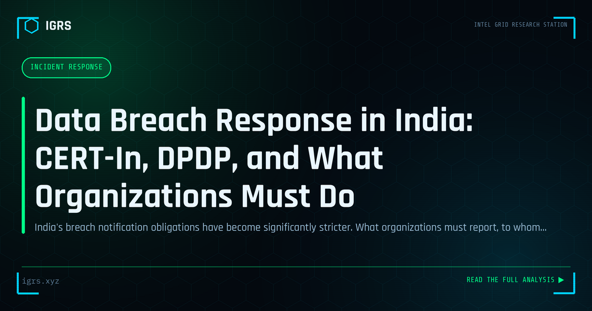

Data Breach Response in India: CERT-In, DPDP, and What Organizations Must Do
| File No. | IGRS-042/2026 |
| Subject | Regulatory compliance guide for data breach notification under Indian law in 2026 |
| Category | Incident Response |
| Author | Manuj Kumar Pandey |
| Published | 2026-04-12 |
| Reading time | 12 minutes |
India's breach notification obligations have become significantly stricter. What organizations must report, to whom, within what timeframe, and what penalties apply for failure.
Responding to a Data Breach in India
A data breach is one of the most serious incidents an organisation can face, with legal, financial, and reputational consequences. In India, the DPDP Act 2026 has formalised breach response obligations, making a structured, compliant response essential. This guide outlines how Indian organisations should respond to a data breach — from detection through notification and recovery.
The First Hours Matter Most
The initial response to a breach shapes everything that follows. The priorities in the first hours are to confirm and contain the breach, preserve evidence, assemble the response team, and begin assessing scope. Acting quickly limits damage, but acting carelessly — by destroying evidence or making premature public statements — creates further problems. A prepared, rehearsed response plan is what separates controlled handling from chaos.
Breach Response Phases
| Phase | Key Actions |
|---|---|
| Detection | Identify and confirm the breach |
| Containment | Stop ongoing data loss |
| Assessment | Determine scope and impact |
| Notification | Inform regulators and affected persons |
| Recovery | Restore and strengthen security |
DPDP Act Notification Obligations
The DPDP Act 2026 requires data fiduciaries to notify the Data Protection Board and affected data principals of a personal data breach. This makes timely, accurate breach assessment legally critical — organisations must know what data was affected and whom it concerns. Failure to handle breaches properly attracts significant penalties, which can reach ₹250 crore, making compliant response not just good practice but a legal and financial imperative.
Containment Without Destroying Evidence
Containment must balance stopping the breach with preserving forensic evidence. Isolating affected systems, revoking compromised credentials, and blocking attacker access stop ongoing loss, but powering down systems or wiping them can destroy evidence needed to understand the breach and support legal action. The right approach isolates while preserving, often by disconnecting from the network rather than shutting down, and capturing forensic images before remediation.
Assessing Scope and Impact
Understanding what happened is central to both response and compliance. The assessment determines what data was accessed or stolen, how many individuals are affected, how the breach occurred, and whether it is contained. This drives notification decisions and remediation. Forensic investigation, including analysis of logs and affected systems with proper evidence handling under Section 63 BSA, establishes these facts defensibly.
Notification and Communication
Once scope is understood, notification follows legal requirements and good practice: informing the Data Protection Board as the DPDP Act requires, notifying affected individuals clearly and honestly, reporting to CERT-In per its directions, and managing public communication carefully. Transparent, timely communication preserves trust, while delays and obfuscation compound reputational damage and legal exposure.
Recovery and Strengthening
After containment and notification, recovery restores operations and addresses the root cause. This includes remediating the vulnerability that enabled the breach, restoring affected systems securely, strengthening controls to prevent recurrence, and learning from the incident through a post-incident review. A breach handled well becomes an opportunity to materially improve security posture.
Preparing Before a Breach
The best breach response is prepared in advance. Indian organisations should have an incident response plan, a designated response team, relationships with forensic and legal experts, and an understanding of their DPDP obligations — all before a breach occurs. Regular testing through tabletop exercises ensures the plan works under pressure. In a regulatory environment that now mandates breach notification with serious penalties, preparation is the foundation of both compliance and resilience.